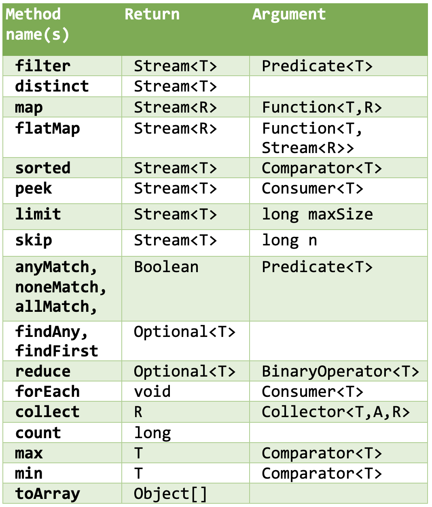

20. Functional programming intro#
Note
This is an optional chapter; you can achieve everything without, but it may be (a lot) more verbose. In a later chapter (Part 5 - Testing & Advanced APIs) this subject will be discussed in much more detail.
20.1. Lambdas implement interfaces#
Consider this interface:
interface NumberCombiner{
double combine(int x, int y);
}
It defines a single abstract method for the contract of this interface; a method that receives two integers and returns a double.
An implementer of this interface might be this AdditionCombiner:
class AdditionCombiner implements NumberCombiner {
@Override
public double combine(int x, int y) {
return x + y;
}
}
It registers itself as signer of the contract and also adheres to the contract. It does so by returning the sum of the two arguments.
Running this code
NumberCombiner nc = new AdditionCombiner();
System.out.println("Combining 2 and 4 with AdditionCombiner: " + nc.combine(2, 4));
will output
Combining 2 and 4 with AdditionCombiner: 6.0
As we have seen before, we could have defined such an implementer as anonymous local class:
NumberCombiner multiplierCombiner = new NumberCombiner(){
@Override
public double combine(int x, int y) {
return x * y;
}
};
System.out.println(multiplierCombiner.combine(2, 4)); // prints 8.0
Taking it further gets us at Lambda’s.
Since the interface NumberCombiner is an interface with a single (non-default) method, implementers can be re-written as a lambda.
NumberCombiner multiplierCombiner = (x, y) -> x * y;
System.out.println(multiplierCombiner.combine(2, 4)); // prints 8.0
Here the (x, y) -> x * y is a lambda.
The two input arguments for the method
Lambda definition
A lambda is a special notation of an anonymous class implementing a functional interface - i.e. an interface with a single non-default method.
So where would this be useful?
Suppose you have a method that uses NumberCombiner instances to combine numbers in an optional way and then print the result. Here is such a method:
void useAcombiner(int x, int y, NumberCombiner combiner) {
System.out.println("Combining " + x + " and " + y + ": " + combiner.combine(2, 4));
}
Now we could provide a classic implementer, anonymous or not, like this:
useAcombiner(5, 3, new NumberCombiner() {
@Override
public double combine(int x, int y) {
return x * y;
}
});
But this is a typical use case for lambda’s:
useAcombiner(5, 3, (x, y) -> x * y);
Clear and concise!
20.2. The java.function package#
Since a combining operation as shown above - taking two arguments and returning a new value - is a common operation, we could create a generic version of our combiner:
interface Combiner<E, R>{
R combine(E x, E y);
}
Here, the exact types of the arguments and return type have been abstracted away. To create such a combiner we either need to specify the types using diamond operators - as we have seen with all collection types:
class GenericAdditionCombiner implements Combiner<Integer, Double> {
@Override
public Double combine(Integer x, Integer y) {
return Double.valueOf(x + y);
}
}
or we can create a lambda:
Combiner<Integer, Double> additionCombiner = (x, y) -> Double.valueOf(x + y);
Since these operations are so often occurring, the Java developers have defined a whole collection of interfaces that define all the standard possible “contracts”: convert from one type or value to another (map), filtering values, combining two values int a new value (of possibly a different type), reduceing many values to one.
Here is the code of our previous Combiner in a generic way; it is named BiFunction<T,U,R> and it has a single non-default method: R apply(T t, U u) which says “given arguments of type T and U, I will return a value of type R”.
package java.util.function;
import java.util.Objects;
/**
* Represents a function that accepts two arguments and produces a result.
*/
@FunctionalInterface
public interface BiFunction<T, U, R> {
/**
* Applies this function to the given arguments.
*
* @param t the first function argument
* @param u the second function argument
* @return the function result
*/
R apply(T t, U u);
//default method omitted
}
So, to create a (multiplying) lambda from such an interface we could do this
BiFunction<Integer, Integer, Double> bf = (integer1, integer2) -> Double.valueOf(integer1 * integer2);
Which is the same as, in classic Java:
BiFunction<Integer, Integer, Double> bf = new BiFunction<>() {
@Override
public Double apply(Integer integer1, Integer integer2) {
return Double.valueOf(integer1 * integer2);
}
};
Have a look at the java.function package for all functional interfaces.
Usually, you will not be interested in the exact interface that your lambda is implementing; you simply want to provide a lambda that matches the signature of the consuming method. Enter Streams.
20.3. Streams#
This section is NOT intended as an in-depth review of streams; it is simply a first acquaintance of the subject. A later chapter will give more detail.
Suppose we have a List of Strings (words), then we could do something like this with this list:
List<String> words = List.of("One", "flew", "over", "the", "cuckoos", "nest");
words.stream() // stream of String objects
.peek(w -> System.out.println(w)) // just peeks with Consumer<T> and continues the stream
.map(w -> w.toUpperCase()) // convert with Function<T,R> to stream of Strings in uppercase
.filter(w -> w.length() > 4) // filter words over length 4 characters
.sorted() // sort and continue stream
.forEach(s -> System.out.println(s)); // prints the words
which will output
One flew over the cuckoos nest CUCKOOS
Streams can be chained to new streams or can have terminal operations. In the example above, all functions except for forEach() returned new streams.
The main stream operations are these:
{kind=link}
The map() function has many variants, such as mapToInt, mapToDouble, mapToObject. Choose the appropriate one!
Note that the last code snippet could also have been written using method references, something your IDE may suggest instead of the normal lambda notation:
List<String> words = List.of("One", "flew", "over", "the", "cuckoos", "nest");
words.stream() // stream of String objects
.peek(System.out::println) // just peeks with Consumer<T> and continues the stream
.map(String::toUpperCase) // convert with Function<T,R> to stream of Strings in uppercase
.filter(w -> w.length() > 4) // filter words over length 4 characters
.sorted() // sort and continue stream
.forEach(System.out::println); // prints the words